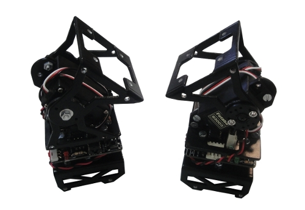

Unimod es el módulo mínimo capaz de oscilar de manera autónoma. Está formado por un módulo MY-1 (también se puede hacer con módulos Y1), una tarjeta Skycube y cuatro pilas AAA. A partir de Unimod se construyen robots modulares de mayor tamaño, anadiéndole más módulos u otros Unimods. Es el robot modular “hola mundo” 😉
En este vídeo se muestra lo fácil que es descargar firmware en Unimod. Para ello necesitamos el cable TTL-232R-5V de FTDI y el programa pydownloader:

En este vídeo se muestran dos Unimods oscilando con la misma frecuencia y amplitud, pero cambian las fases. Es precisamente esta diferencia en las fases la que usamos para generar los diferentes movimientos

En este otro vÃdeo se muestran dos Unimods oscilando a frecuencias diferentes:

El software para generar oscilaciones en la Skycube está disponible en la página de micro-osciladores.
Muy interesante. No sé nada de robótica pero este tipo de cosas me motivan aun más a seguir aprendiendo.
Hola Rubén,
Gracias. Me alegra que te guste 😉